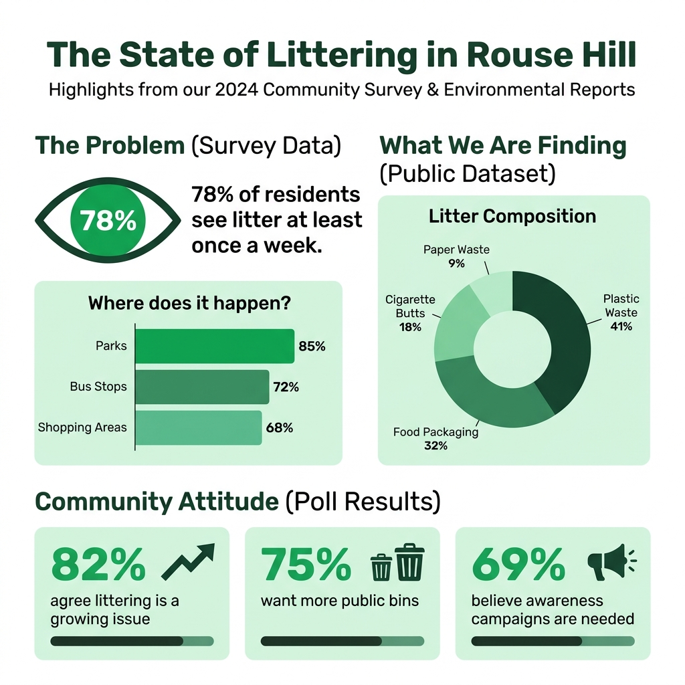

To understand how littering affects Rouse Hill, data was collected through surveys, online polls, and public environmental datasets. The information gathered helps identify patterns, community attitudes, and areas that require the most attention.
Tracking how many people have engaged with each form on this site.
Field photo. Cigarette filters often dominate “small litter” in busy public areas. They are light, easy to drop, and slow to break down, so hotspot maps and survey responses about litter types show up in real piles like this.
This image supports what residents report in surveys and polls: small items add up beside bins, seats, and walkways. Pairing on-the-ground photos with your charts helps show that data isn’t abstract. It reflects places people walk through every day in Rouse Hill.
A survey was conducted to gather opinions from local residents. The results show that a large majority of respondents notice litter in public areas at least once a week. Many participants identified parks, bus stops, and shopping areas as the most affected locations.
These findings emphasize that it is not an isolated problem, but rather widespread throughout the most commonly shared community areas.
Based on a regional community survey. Infographic: weekly visibility of litter and where it is noticed most often.
Representative results from an online community poll regarding growing concerns and solutions.
An online poll was used to quickly measure community attitudes. The poll results support the survey findings, showing that most people believe littering is a growing issue and that more bins and awareness campaigns would help reduce the problem.
Data from environmental reports and NSW Government sources shows that littering continues to be a significant issue across many suburbs, including Rouse Hill. Trends indicate that plastic waste and food packaging are the most common forms of litter.
Data sources include NSW Govt. reports & environmental data illustrating regional litter trends.

The infographic above provides a visual summary of the key findings from our research, making it easier to understand the scale and nature of the littering problem in Rouse Hill at a glance.
The combined data suggests that littering in Rouse Hill is caused by convenience, lack of awareness, and insufficient disposal options in busy areas. The results also show strong community support for solutions such as more bins, better signage, and organised clean up events.